Simulado 1
No meio do caminho
Para medir onde você está nas duas provas e ajustar o estudo enquanto ainda dá tempo.
30 dias após a compra

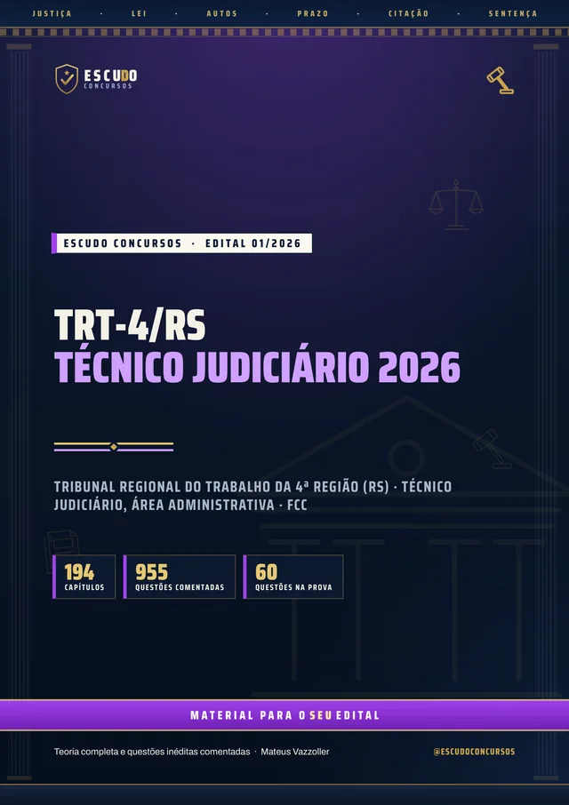
955questões
comentadas
Nível superior em qualquer área, R$ 9.776,71 iniciais e Conhecimentos Específicos com peso 2. O seu material cobre as dez disciplinas e a Redação eliminatória da FCC? Curso feito a partir do Edital nº 01/2026 do TRT da 4ª Região, item por item, com a EC 141/2026 (40 horas semanais) e questões de A a E no padrão da FCC.
De acordo com o Edital nº 01/2026 · FCC
de R$ 47 por 21% OFF
R$37
com o cupom TRT437 até 31/12/2026. Pelo botão, o cupom já vai preenchido.
R$47
Curso completo, com acesso imediato.
O concurso
O Edital nº 01/2026 do Tribunal Regional do Trabalho da 4ª Região (Rio Grande do Sul), publicado no DOU em 22/10/2026, forma cadastro de reserva para Técnico Judiciário, Área Administrativa, com remuneração inicial de R$ 9.776,71. O cargo exige nível superior completo em qualquer área. As inscrições vão até 25 de novembro de 2026, com taxa de R$ 90,00.
A prova da Fundação Carlos Chagas (FCC) é em 31 de janeiro de 2027, pela manhã, em Porto Alegre: 30 questões de Conhecimentos Gerais (peso 1), 30 de Conhecimentos Específicos (peso 2), todas de 5 alternativas, de (A) a (E), e uma Redação dissertativo-argumentativa de 20 a 30 linhas, tudo em 4 horas.
A nota das objetivas é a média ponderada: quem tirar 6,00 está habilitado (4,80 para as cotas), sem desconto por erro. Uma questão de Específicos vale o dobro de uma de Gerais. A Redação também exige 6,00 e só é corrigida para os mais bem classificados nas objetivas.
| Prova | Disciplinas | Questões |
|---|---|---|
| I | Conhecimentos Gerais: Língua Portuguesa, Matemática e Raciocínio Lógico, Noções de Legislação (TRT-4, CNJ e CSJT), Noções de Direitos Humanos e Noções de Informática (peso 1) | 30 |
| II | Conhecimentos Específicos: Direito Constitucional, Direito Administrativo, Administração Pública, Direito do Trabalho e Direito Processual do Trabalho (peso 2) | 30 |
| III | Redação dissertativo-argumentativa, de 20 a 30 linhas, eliminatória (nota de 0 a 10) | 1 |
| Cada objetiva vale de 0 a 10. Nota = (Gerais + 2 x Específicos) / 3, habilitação com 6,00. | 60 |
O formato
Você estuda lendo, no seu ritmo, pela área de membros da Hotmart ou com os arquivos baixados. O curso foi feito a partir do Edital nº 01/2026, item por item, na ordem do Anexo II para Técnico Judiciário, Área Administrativa, com a legislação, as súmulas e as OJs consideradas até a data da publicação do edital (22/10/2026), como o próprio edital manda.
Páginas reais do PDF
Toque numa página para ver em tamanho maior.
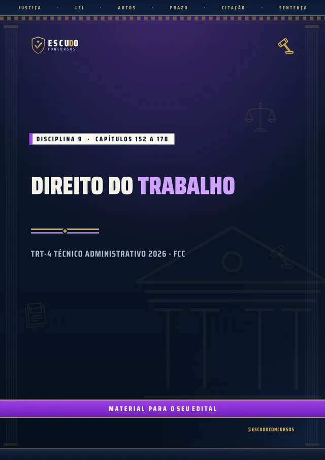
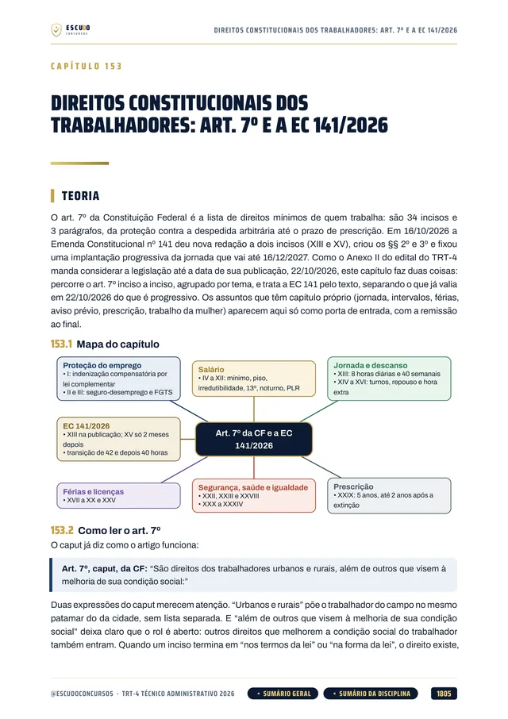
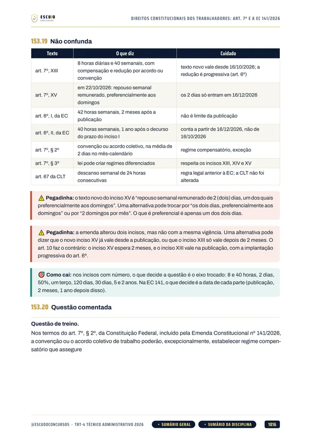
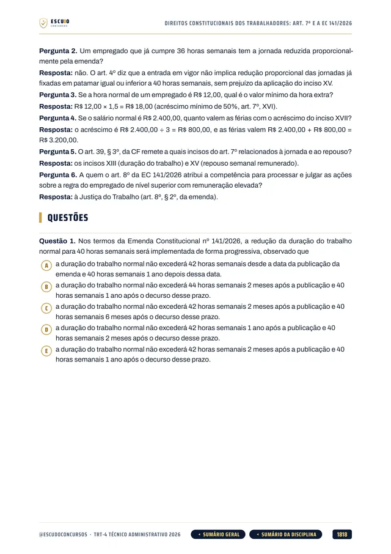
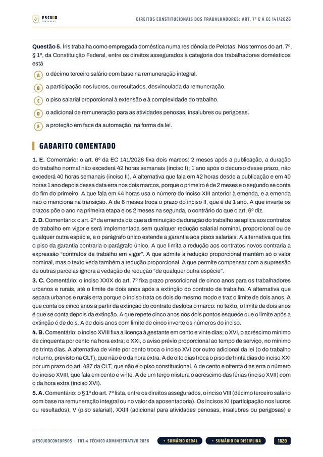
100% em PDF · Garantia de 7 dias · Pagamento pela Hotmart
O que você recebe
Curso em PDF organizado em módulos pelas disciplinas do edital, com 2.303 páginas no padrão visual ESCUDO, para ler no computador, no tablet, no celular ou no app da Hotmart. Não há videoaulas.
194 capítulos cobrindo as dez disciplinas da prova: Língua Portuguesa e Redação (29 capítulos), Matemática, Estatística e Raciocínio Lógico (16), Noções de Legislação do TRT-4, CNJ e CSJT (9), Direitos Humanos (21), Informática (9), Direito Constitucional (19), Direito Administrativo (34), Administração Pública (13), Direito do Trabalho (27) e Direito Processual do Trabalho (16), mais um capítulo de abertura sobre a prova e o plano de estudo.
955 questões inéditas com 5 alternativas, de (A) a (E), no padrão da FCC, todas com gabarito comentado: por que a correta está correta e onde está o erro de cada uma das outras.
Noções de Legislação em 9 capítulos: Regimento Interno do TRT-4 até a RA nº 31/2026, Código de Conduta do TRT-4, Resolução CNJ 400/2021 (sustentabilidade), Resolução CSJT 360/2023 e Resolução CNJ 351/2020 (assédio e discriminação), no recorte do edital.
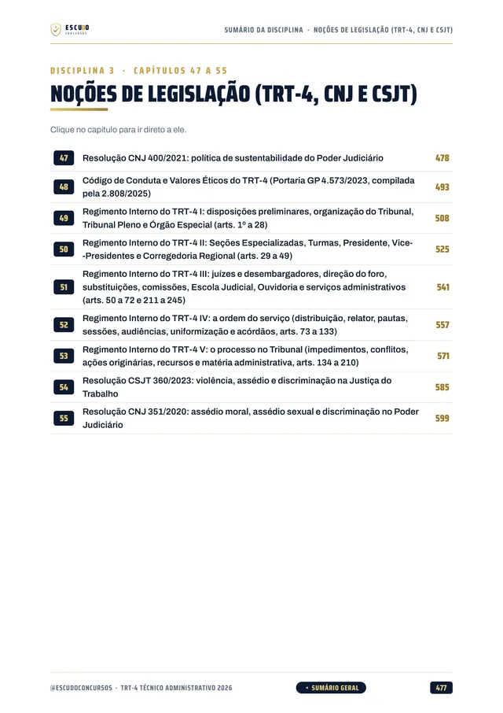
Os Conhecimentos Específicos, que pesam o dobro, em 109 capítulos: Constituição, Direito Administrativo com as Leis 8.112, 11.416, 9.784, 14.133 e 8.429, Administração Pública, Direito do Trabalho com a EC 141/2026 (40 horas semanais) e Processo do Trabalho, com súmulas e OJs do TST até a data do edital.
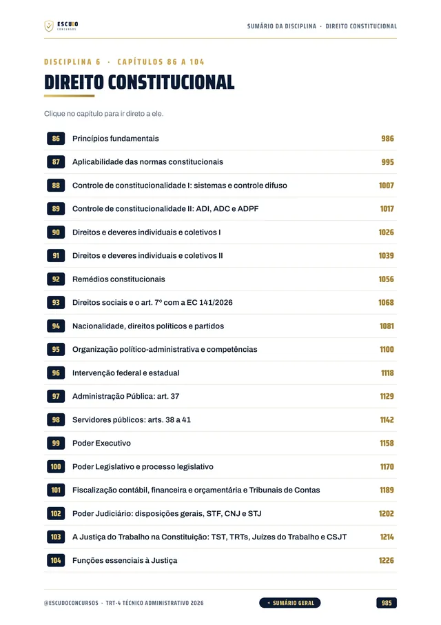
A Redação do TRT-4: capítulos sobre a dissertação de 20 a 30 linhas, os critérios do item 14.5 do edital e o projeto de texto, e uma proposta de Redação com roteiro de correção em cada simulado.
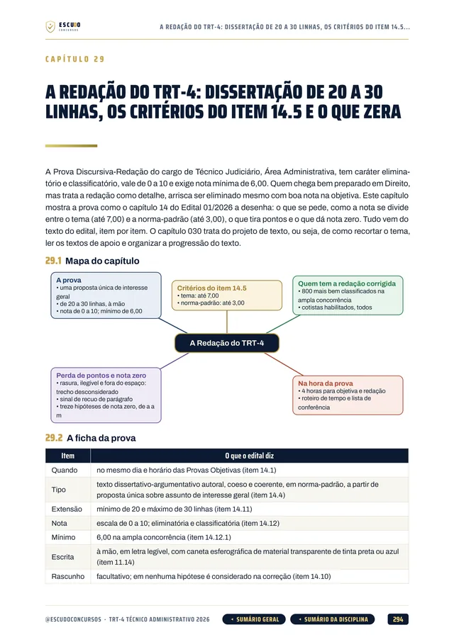
Teoria com recursos para memorizar: mapa de cada capítulo, lei transcrita onde o número ou a palavra decide a questão, quadros de "pegadinha" e "não confunda", revisão relâmpago e teste de memória no fim de cada capítulo.
Navegação clicável: do sumário você vai direto ao capítulo, e volta pelo botão do rodapé.
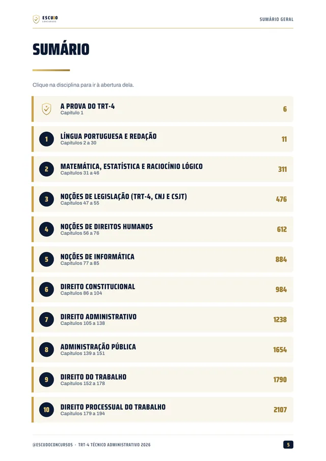
2 simulados inéditos no formato da prova (60 questões de A a E, 30 de Gerais e 30 de Específicos, mais a Redação), cada um com caderno de comentários.
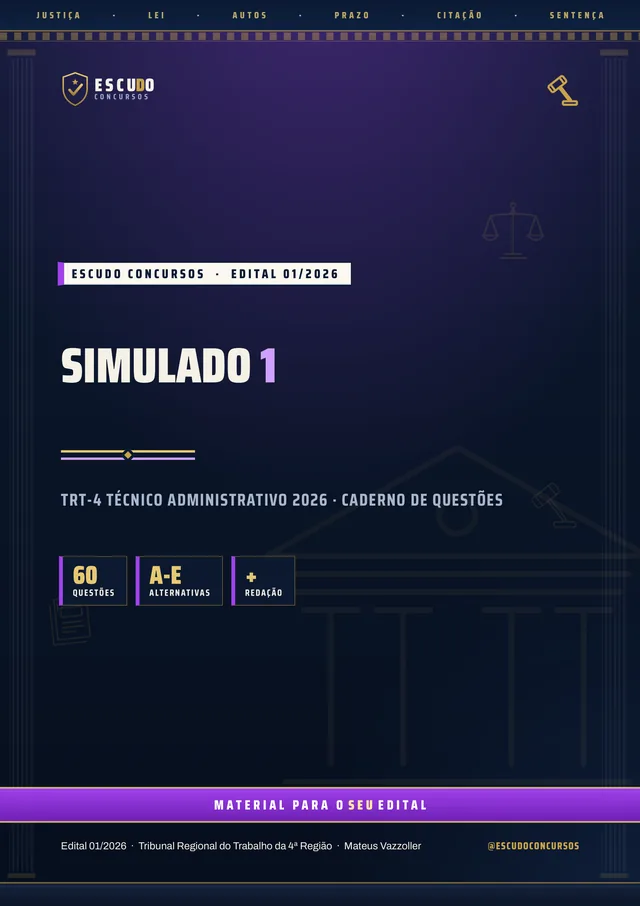
Área de membros
| Módulo | Conteúdo | Liberação |
|---|---|---|
| M0 Comece aqui | Apresentação + capítulo 001 (como é a prova e como usar o curso). Bônus: PDF completo para baixar e imprimir | Na compra; o PDF completo no 8º dia |
| M1 Língua Portuguesa I | Capítulos 002 a 009 | Na compra |
| M2 Língua Portuguesa II | Capítulos 010 a 017 | Na compra |
| M3 Língua Portuguesa III | Capítulos 018 a 026 | Na compra |
| M4 Redação oficial e a Redação do TRT-4 | Capítulos 027 a 030 | Na compra |
| M5 Matemática e Estatística | Capítulos 031 a 039 | Na compra |
| M6 Raciocínio Lógico | Capítulos 040 a 046 | Na compra |
| M7 Noções de Legislação I | Capítulos 047 a 051 | Na compra |
| M8 Noções de Legislação II | Capítulos 052 a 055 | Na compra |
| M9 Direitos Humanos I | Capítulos 056 a 063 | Na compra |
| M10 Direitos Humanos II | Capítulos 064 a 070 | Na compra |
| M11 Direitos Humanos III | Capítulos 071 a 076 | Na compra |
| M12 Informática | Capítulos 077 a 085 | Na compra |
| M13 Direito Constitucional I | Capítulos 086 a 094 | Na compra |
| M14 Direito Constitucional II | Capítulos 095 a 104 | Na compra |
| M15 Direito Administrativo I | Capítulos 105 a 112 | Na compra |
| M16 Direito Administrativo II | Capítulos 113 a 118 | Na compra |
| M17 Direito Administrativo III | Capítulos 119 a 125 | Na compra |
| M18 Direito Administrativo IV | Capítulos 126 a 131 | Na compra |
| M19 Direito Administrativo V | Capítulos 132 a 138 | Na compra |
| M20 Administração Pública I | Capítulos 139 a 145 | Na compra |
| M21 Administração Pública II | Capítulos 146 a 151 | Na compra |
| M22 Direito do Trabalho I | Capítulos 152 a 158 | Na compra |
| M23 Direito do Trabalho II | Capítulos 159 a 165 | Na compra |
| M24 Direito do Trabalho III | Capítulos 166 a 172 | Na compra |
| M25 Direito do Trabalho IV | Capítulos 173 a 178 | Na compra |
| M26 Processo do Trabalho I | Capítulos 179 a 186 | Na compra |
| M27 Processo do Trabalho II | Capítulos 187 a 194 | Na compra |
| M28 Simulado 1 | 60 questões e Redação, caderno de comentários | 30 dias após a compra |
| M29 Simulado 2 | 60 questões e Redação, caderno de comentários | 60 dias após a compra |
Treino no formato da prova
Cada simulado tem 60 questões de A a E, 30 de Conhecimentos Gerais e 30 de Específicos, e uma proposta de Redação, no formato da prova, com caderno de comentários e roteiro de correção.
Simulado 1
Para medir onde você está nas duas provas e ajustar o estudo enquanto ainda dá tempo.
30 dias após a compra
Simulado 2
Liberado 60 dias após a compra, para o seu último teste antes da prova de 31/01/2027.
60 dias após a compra
Para quem é
Para quem vai prestar Técnico Judiciário, Área Administrativa, do TRT-4 em 31/01/2027 e quer estudar pelo programa do edital, com os Conhecimentos Específicos, que valem dois terços da nota das objetivas, e a Redação cobertos por inteiro.
Você tem 7 dias de garantia pela Hotmart. Se não for o que você esperava, pede o reembolso pela própria Hotmart, dentro do prazo.
Sem surpresa na área de membros
Na compra: todas as disciplinas em PDF, uma por módulo, com a teoria e as questões comentadas. É o curso inteiro, para começar a estudar no mesmo dia.
8 dias após a compra: o PDF completo para imprimir. É o mesmo conteúdo dos módulos num arquivo só, liberado depois da garantia de 7 dias.
Simulado 1: 30 dias após a compra, para medir onde você está no meio da preparação.
Simulado 2: 60 dias após a compra, para o último teste.
O PDF completo e os simulados aparecem bloqueados na área de membros até a data de cada um: não é conteúdo faltando, é a liberação programada.
Dúvidas
Não. É um curso 100% em PDF: teoria, questões comentadas e simulados para ler e resolver.
O acesso é imediato depois da confirmação do pagamento, pela área de membros da Hotmart (web ou app). O PDF completo para baixar e imprimir é liberado no 8º dia.
O Simulado 1 é liberado 30 dias após a compra e o Simulado 2, 60 dias após a compra.
Cada prova objetiva vale de 0 a 10. A nota é a média ponderada: Conhecimentos Gerais (30 questões) com peso 1 e Conhecimentos Específicos (30 questões) com peso 2, sem desconto por erro. Quem tira 6,00 está habilitado (4,80 para as cotas). A Redação vale de 0 a 10 e também exige 6,00. O capítulo 001 explica a estratégia.
Sim, e ela é eliminatória: um texto dissertativo-argumentativo de 20 a 30 linhas, corrigido para os mais bem classificados nas objetivas. O curso tem capítulos sobre a Redação do TRT-4, os critérios do edital e o projeto de texto, e cada simulado traz uma proposta com roteiro de correção.
Sim. A emenda (40 horas semanais e repouso de 2 dias) é anterior ao edital e entra como lei vigente em Direito Constitucional e em Direito do Trabalho. O curso segue a legislação até a data da publicação do edital, 22/10/2026.
Não como curso completo. Os Conhecimentos Gerais são comuns, mas o Analista e as especialidades de Técnico (Enfermagem, Polícia Judicial) têm conteúdo específico próprio. Este curso é para Técnico Judiciário, Área Administrativa.
Não. As 955 questões de treino e as dos simulados são inéditas, escritas no padrão da FCC a partir do conteúdo programático do edital.
Você tem 7 dias de garantia pela Hotmart. Se não for o que você esperava, pede o reembolso.
TRT-4/RS 2026 · Técnico Judiciário, Área Administrativa
de R$ 47 por 21% OFF
R$37
com o cupom TRT437 até 31/12/2026.
R$47
Curso completo, com acesso imediato.
Material para o SEU edital. ESCUDO Concursos.
Continue estudando